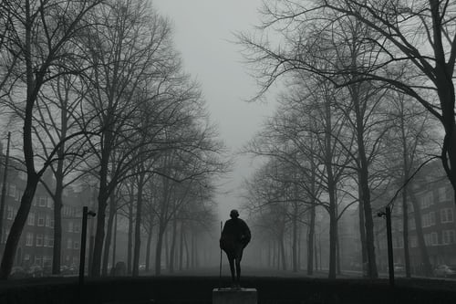

Mohandas Karamchand Gandhi

Mohandas Karamchand Gandhi was an Indian lawyer,anti-colonial nationalist and political ethicist who employed nonviolent resistance to lead the successful campaign for India's independence from British rule and in turn inspired movements for civil rights and freedom across the world